Topic 11.1–11.3 · Introduction to Organic Chemistry Part 3
Introduction to Organic Chemistry 3
On this page
- Organic reactions and mechanisms
- The 4 commandments of organic chemistry
- Terminology
- Reactivity terms
- Why organic compounds react as they do
- The five mechanisms
- 1. Free-radical substitution (alkanes)
- 2. Electrophilic addition (alkenes)
- 3. Electrophilic substitution (arenes)
- 4. Nucleophilic substitution (halogenoalkanes)
- 5. Nucleophilic addition (aldehydes and ketones)
- Summary of the mechanisms
Organic reactions and mechanisms
Organic chemistry has millions of compounds but only a handful of ways in which they react. If you understand why a molecule reacts (where its electrons are, and where they are short) and how it reacts (the mechanism), you can predict the reactions of compounds you have never met. This note covers 9476 Topic 11.3: the terms used to describe organic reactions, why different classes of compound react as they do, and the five mechanisms you must be able to draw. Topics 11.4 to 11.10 then apply them to each functional group.
A reaction mechanism is the sequence of steps by which reactants become products. It shows which bonds break and form in each step, and in what order. Mechanisms are drawn with curly arrows, and four rules cover almost every arrow you will draw.
The 4 commandments of organic chemistry
- A full arrow (a curly arrow with a full head) shows the movement of a pair of electrons. A half arrow (a fish-hook, with one barb) shows the movement of one electron.
- An arrow ALWAYS starts from where the electrons are (a lone pair, a bond or a negative charge) and points to where they go (an atom, or the space between two atoms where a new bond forms). In polar reactions this means it goes from an electron-rich site (− or δ−) to an electron-poor site (+ or δ+).
- In polar reactions, the regions of molecules that react with one another to form new bonds are oppositely charged, fully or partially. Sometimes the charge is induced: an approaching C=C bond polarises a Br2 molecule. (In free-radical steps there are no charges: two single electrons pair up to form a bond.)
- In a stable molecule, carbon has 4 bonds. No more, no less. A carbon with only 3 bonds is a short-lived intermediate: a carbocation (positive, 6 outer electrons) or a free radical (one unpaired electron, 7 outer electrons). Count the bonds round every carbon after every step.
Terminology
Functional group
A functional group is the atom or group of atoms that gives a compound its characteristic reactions (Part 1). In most reactions, the functional group is where the action is; the rest of the molecule (the carbon skeleton) usually comes through unchanged.
Degree of substitution
A carbon atom is classed by the number of other carbon atoms bonded to it: a primary (1°) carbon is bonded to one other carbon, a secondary (2°) carbon to two, a tertiary (3°) carbon to three and a quaternary (4°) carbon to four. (The carbon of CH4 or CH3X, bonded to no other carbon, is called a methyl carbon.)
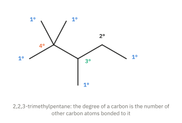
Halogenoalkanes and alcohols are classed by the carbon that carries the halogen or the –OH group. 1-Bromobutane is a primary halogenoalkane, 2-bromobutane is secondary and 2-bromo-2-methylpropane is tertiary (Fig 13 of Part 2). Propan-2-ol is a secondary alcohol. The degree of substitution matters, because it changes the mechanism (SN1 or SN2, below) and the products of oxidation (Topic 11.6).1
Homolytic and heterolytic fission
A covalent bond is a shared pair of electrons. When it breaks, the pair can be split in two ways.
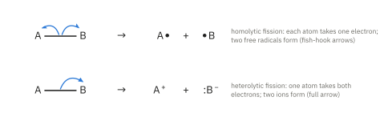
- Homolytic fission refers to the breaking of a covalent bond in such a way that each atom takes away one electron. Two free radicals are produced. It is typical of non-polar bonds, and usually needs ultraviolet light or high temperature (Cl–Cl, Br–Br, O–O).
- Heterolytic fission refers to the breaking of a covalent bond in such a way that one atom takes away both electrons and the other takes none. Two oppositely charged ions are produced. It is typical of polar bonds: the more electronegative atom takes the pair (C–Br → C+ + Br−).
Free radicals and carbocations
- A free radical is an atom or group with an unpaired electron, shown by a dot: Cl•, CH3•, CH3CH2•. Free radicals are very reactive, because they react to pair the electron.
- A carbocation is an ion with a positively charged carbon atom, which has only three bonds and six outer electrons: CH3+, (CH3)3C+. The positive carbon is sp2 hybridised and planar, with an empty p orbital. Carbocations are electrophiles. They are classed as primary, secondary or tertiary in the same way as carbon atoms.
Nucleophiles and electrophiles
Most organic reactions happen between an electron-rich species and an electron-poor species. The two are named by what they are attracted to.
- Nucleophile means “nucleus loving”. Since the nucleus is a region of positive charge, a nucleophile is attracted to electron-poor (+ or δ+) sites. A nucleophile is an electron-pair donor: it has a lone pair that it uses to form a new covalent bond. In the language of Topic 4, it is a Lewis base. Examples: OH−, CN−, Br−, and also neutral molecules with lone pairs, such as H2O and NH3. A nucleophile does not have to be charged.
- Electrophile means “electron loving”. Since electrons are negatively charged, an electrophile is attracted to electron-rich sites (a C=C bond, a benzene ring, a lone pair). An electrophile is an electron-pair acceptor: it accepts a pair of electrons to form a new covalent bond. It is a Lewis acid. Examples: H+, Br+, NO2+, carbocations, and the δ+ end of a polarised molecule such as Br2 near a C=C bond.
Types of reaction
Reactions are also named by what happens overall.
| Type | What happens | Example |
|---|---|---|
| Addition | Two molecules join to form one product | CH2=CH2 + Br2 → CH2BrCH2Br |
| Substitution | An atom or group is replaced by another | CH3CH3 + Cl2 → CH3CH2Cl + HCl |
| Elimination | A small molecule is removed from one molecule, usually forming a C=C bond | CH3CH2OH → CH2=CH2 + H2O |
| Condensation | Two molecules join with the loss of a small molecule such as H2O or HCl | CH3COOH + CH3CH2OH ⇌ CH3COOCH2CH3 + H2O |
| Hydrolysis | A bond is broken by reaction with water (often with acid or alkali) | CH3COOCH2CH3 + H2O ⇌ CH3COOH + CH3CH2OH |
| Oxidation | Gain of O or loss of H; [O] stands for oxygen from the oxidising agent | CH3CH2OH + [O] → CH3CHO + H2O |
| Reduction | Gain of H or loss of O; [H] stands for hydrogen from the reducing agent | CH3CHO + 2[H] → CH3CH2OH |
Some reactions fit two descriptions. The reaction of bromoethane with aqueous hydroxide ions, CH3CH2Br + OH− → CH3CH2OH + Br−, is a nucleophilic substitution, and is also called the hydrolysis of bromoethane. A full name for a reaction combines the type of reagent and the type of reaction: electrophilic addition, nucleophilic substitution and so on.
A map of the mechanisms
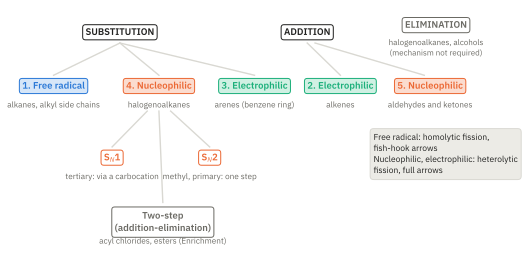
Reactivity terms
Delocalisation
Delocalised electrons are spread over three or more atoms instead of being held between two. You met the most important example in Part 1: the 6 π electrons of benzene. Spreading electrons (or charge) over more atoms lowers the energy, so delocalisation makes a molecule or ion more stable. It explains why benzene resists addition (below), why chlorobenzene resists substitution (below), and why the intermediate in electrophilic substitution, with its charge delocalised over five carbons, can form at all.
Electronic effects
- Electron-donating groups push electron density towards the atom they are attached to. Alkyl groups (CH3–, C2H5– …) are electron-donating. They stabilise an adjacent positive charge, which is why tertiary carbocations are more stable than primary ones (Fig 4).
- Electron-withdrawing groups pull electron density away from the atom they are attached to, because they contain electronegative atoms: halogens, –OH, C=O, –C≡N, –NO2. They make an adjacent carbon more δ+ (so more open to nucleophiles), and they stabilise an adjacent negative charge (so, for example, chloroethanoic acid is a stronger acid than ethanoic acid; Topic 11.8).
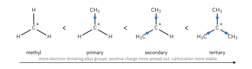
Steric effect
Steric hindrance is the physical blocking of a reaction site by bulky groups nearby. The more groups (and the larger the groups) around a carbon atom, the harder it is for a reagent to get close enough to form a bond. It is why tertiary halogenoalkanes do not react by SN2, and part of why chlorobenzene does not react with nucleophiles.
Why organic compounds react as they do
Alkanes: generally unreactive towards polar reagents
Alkanes contain only C–C and C–H bonds. Carbon and hydrogen have similar electronegativities, so these bonds are almost non-polar: there are no δ+ sites to attract nucleophiles and no δ− sites to attract electrophiles. Alkanes have no lone pairs and no π electrons. Their σ bonds are also strong (C–H 410 kJ mol−1, C–C 350 kJ mol−1, Data Booklet). So alkanes do not react with polar reagents such as acids, alkalis, oxidising agents like acidified KMnO4, or nucleophiles. They do react with very reactive free radicals, such as Cl•, and they burn.
Alkenes: reactive towards electrophiles
The C=C bond in an alkene is a region of high electron density. The π electrons lie above and below the plane of the molecule, exposed and away from the nuclei, and the π bond is weaker than a σ bond (Part 1). So alkenes attract electrophiles, and react readily by electrophilic addition: the π bond breaks and two new σ bonds form.
Benzene compared with alkenes
Benzene also has π electrons, but they are delocalised over all six carbons. This makes two differences:
- Benzene is less reactive towards electrophiles. The π electron density is spread over the whole ring rather than concentrated between two carbons, so it attracts an electrophile less strongly; and attacking the ring means partly losing the stable delocalised system. Ethene decolourises bromine at room temperature in the dark; benzene does not react with bromine unless a halogen carrier such as FeBr3 is added to make a much stronger electrophile, Br+.
- Benzene prefers substitution to addition. Addition across one of the ring bonds would destroy the delocalised π system for good, and lose its extra stability. In substitution, an H atom is replaced and the delocalised system is restored in the final step, so the product keeps the stability of the benzene ring.
Halogenoalkanes: hydrolysis and C–X bond strength
In a halogenoalkane the C–X bond is polar, Cδ+–Xδ−, because the halogen is more electronegative than carbon. The δ+ carbon is attacked by nucleophiles such as OH− and H2O, and the halide ion leaves: a nucleophilic substitution. With water or aqueous hydroxide this is a hydrolysis:
RX + H2O → ROH + H+ + X−
You might expect the most polar bond, C–F, to react fastest. In fact the order of reactivity is the reverse: R–I > R–Br > R–Cl ≫ R–F. The rate is controlled by how easily the C–X bond breaks, not by its polarity. The bond energies (Data Booklet) are C–I 240, C–Br 280, C–Cl 340 and C–F 485 kJ mol−1: the weaker the bond, the faster the hydrolysis (Topic 2, Part 1 makes the same point).
This can be seen by warming each halogenoalkane with aqueous silver nitrate in ethanol (the ethanol dissolves the halogenoalkane). Water slowly hydrolyses the halogenoalkane, and the halide ions released form a precipitate with Ag+: Ag+(aq) + X−(aq) → AgX(s). The iodoalkane gives a yellow precipitate of AgI first, the bromoalkane a cream precipitate of AgBr next, and the chloroalkane a white precipitate of AgCl last. Fluoroalkanes give no visible change.
Chlorobenzene: unreactive towards nucleophiles
Chlorobenzene does not undergo nucleophilic substitution under ordinary conditions: it is unchanged after boiling with aqueous sodium hydroxide, which hydrolyses a chloroalkane. There are two reasons.
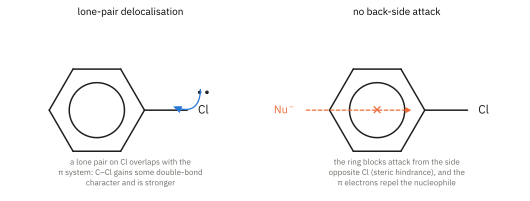
- Lone-pair delocalisation. One lone pair on the Cl atom is in a p orbital that overlaps with the π system of the ring. The lone pair is partly delocalised into the ring, so the C–Cl bond gains some double-bond character. It is stronger and slightly shorter than the C–Cl bond in a chloroalkane (about 0.174 nm, against about 0.178 nm in chloroethane; literature values), so it is harder to break. It is also less polar, so the carbon is less δ+.
- Steric hindrance and repulsion. In SN2 the nucleophile must approach the carbon from the side opposite the Cl. In chlorobenzene that side is blocked by the ring itself. The electron-rich π cloud of the ring also repels an approaching nucleophile, which is itself electron-rich.2
Carbonyl compounds: reactive towards nucleophiles
In aldehydes and ketones the C=O bond is strongly polar, Cδ+=Oδ−. The carbonyl carbon is electron-poor and attracts nucleophiles. Because the carbonyl carbon is sp2 hybridised and planar, a nucleophile can reach it easily from above or below the plane. The nucleophile adds to the carbon and the π electrons move onto the oxygen: a nucleophilic addition. The classic example in 9476 is the addition of hydrogen cyanide (mechanism 5 below). (Compare an alkene, whose electron-rich C=C attracts electrophiles instead.)
The five mechanisms
In every polar mechanism below, look for the same pattern (Commandment 2): each curly arrow takes electrons from an electron-rich site (a lone pair, a π bond, a negative charge) to an electron-poor site (a δ+ or + atom). If you know where the electrons are and where they are short, you can draw the mechanism.
1. Free-radical substitution (alkanes)
Example: ethane with chlorine in ultraviolet light (or sunlight). Overall: CH3CH3 + Cl2 → CH3CH2Cl + HCl.
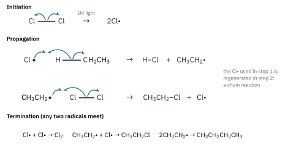
- Initiation. UV light supplies the energy to break the Cl–Cl bond (244 kJ mol−1, the weakest bond present) by homolytic fission, giving two chlorine radicals. Radicals are created.
- Propagation. A Cl• radical removes an H atom from ethane, forming HCl and an ethyl radical. The ethyl radical then removes a Cl atom from a Cl2 molecule, forming chloroethane and a new Cl•. Each propagation step uses one radical and makes another, so one initiation can lead to thousands of propagation cycles: a chain reaction.
- Termination. Any two radicals combine. Radicals are removed and the chain stops. The formation of a little butane (from two ethyl radicals) is evidence for the mechanism.
Free-radical substitution is not selective. Cl• radicals also attack chloroethane, giving dichloroethanes (CH3CHCl2, CH2ClCH2Cl) and further products, so a mixture is formed. An excess of ethane makes monosubstitution more likely.
2. Electrophilic addition (alkenes)
Example: ethene with bromine dissolved in tetrachloromethane, CCl4, at room temperature in the dark. The red-brown colour of bromine disappears. Overall: CH2=CH2 + Br2 → CH2BrCH2Br (1,2-dibromoethane).
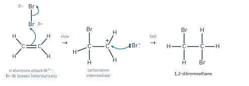
- Step 1 (slow). Br2 is non-polar, but as it approaches the electron-rich C=C bond, the π electrons repel the electrons in the Br–Br bond and induce a dipole, Brδ+–Brδ−. The π electrons attack the Brδ+ atom (the electrophile), forming a C–Br bond, and the Br–Br bond breaks heterolytically. A carbocation and a bromide ion form.
- Step 2 (fast). The bromide ion uses a lone pair to bond to the positive carbon. The product is 1,2-dibromoethane.
The two Br atoms add across the double bond, and the C=C becomes a C–C single bond (both carbons change from sp2 to sp3). The decolourisation of bromine is the standard test for a C=C bond.3
3. Electrophilic substitution (arenes)
Example: the mono-bromination of benzene: benzene with bromine and a catalyst of iron(III) bromide (or iron filings, which react with bromine to form FeBr3), at room temperature, with no water present. Overall: C6H6 + Br2 → C6H5Br + HBr.
Bromine alone is not a strong enough electrophile to attack the delocalised ring. FeBr3 is a halogen carrier: as a Lewis acid it accepts a lone pair from Br2 and generates the electrophile, Br+:
Br2 + FeBr3 → Br+ + FeBr4−
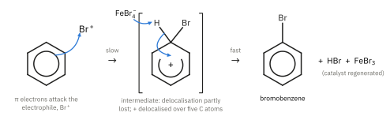
- Step 1 (slow). Two of the π electrons attack Br+, forming a C–Br bond. The carbon that now carries both H and Br becomes sp3. The ring has lost part of its delocalisation: only four π electrons are left, delocalised over the other five carbons, and the positive charge is delocalised over them too, mostly on three of them (the broken circle with +).
- Step 2 (fast). FeBr4− removes H+ from the sp3 carbon. The two electrons of the C–H bond return to the ring, restoring the full delocalised system of 6 π electrons. HBr forms and FeBr3 is regenerated: it is a catalyst.
Step 1 is slow because it destroys the stable delocalised system; step 2 is fast because it restores it. The ring reacts by substitution, not addition, for exactly this reason (see above).
4. Nucleophilic substitution (halogenoalkanes)
Halogenoalkanes react with nucleophiles such as OH− by nucleophilic substitution, for example by heating under reflux with NaOH(aq). There are two mechanisms, and the structure of the halogenoalkane decides which one is followed. Topic 8 (Reaction Kinetics, Part 1) used the same two examples to show how a mechanism predicts the rate equation.
SN2: one step
Example: bromomethane with hydroxide ions. CH3Br + OH− → CH3OH + Br−
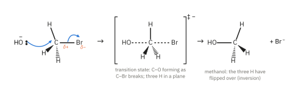
The OH− ion uses a lone pair to attack the δ+ carbon from the side opposite the Br atom. As the new C–O bond forms, the C–Br bond breaks heterolytically and Br− leaves. Both happen in one step, through a transition state in which the carbon is partly bonded to both O and Br, with the three H atoms in a plane. The other three groups flip over, like an umbrella in the wind (inversion). Both the halogenoalkane and OH− take part in the only step, so:
rate = k[CH3Br][OH−]
SN2 means substitution, nucleophilic, bimolecular (two species in the rate-determining step). It is the mechanism for methyl and primary halogenoalkanes: their carbon has only H atoms or one alkyl group around it, so there is little steric hindrance to the back-side attack. In a tertiary halogenoalkane, three bulky alkyl groups block the back of the carbon, so SN2 does not happen.
SN1: two steps, via a carbocation
Example: 2-bromo-2-methylpropane with hydroxide ions. (CH3)3CBr + OH− → (CH3)3COH + Br−
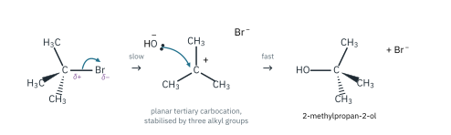
- Step 1 (slow). The C–Br bond breaks heterolytically on its own, forming a tertiary carbocation and Br−.
- Step 2 (fast). OH− attacks the planar carbocation (from either side) to form 2-methylpropan-2-ol.
Only the halogenoalkane is involved in the slow step, so:
rate = k[(CH3)3CBr]
SN1 means substitution, nucleophilic, unimolecular. It is the mechanism for tertiary halogenoalkanes, because their carbocation is relatively stable: three electron-donating alkyl groups spread its positive charge (Fig 4). A primary carbocation is too unstable to form at a useful rate, so primary halogenoalkanes do not react by SN1. Secondary halogenoalkanes can react by either mechanism, depending on the conditions.
| SN2 | SN1 | |
|---|---|---|
| Steps | one | two |
| Rate equation | rate = k[RX][OH−] | rate = k[RX] |
| Species in the slow step | two (bimolecular) | one (unimolecular) |
| Passes through | a transition state | a carbocation intermediate |
| Favoured by | methyl, primary RX (least steric hindrance) | tertiary RX (most stable carbocation) |
| At a chiral centre (Further example) | inversion: one enantiomer gives one product | the planar carbocation is attacked equally from both sides: a racemic mixture |
5. Nucleophilic addition (aldehydes and ketones)
Example: ethanal with hydrogen cyanide, with a trace of sodium cyanide (or potassium cyanide) as catalyst, at 10 to 20 °C. Overall: CH3CHO + HCN → CH3CH(OH)CN (2-hydroxypropanenitrile).
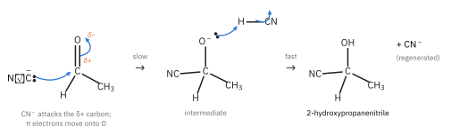
- Step 1 (slow). The cyanide ion is the nucleophile. It uses the lone pair on its carbon atom to attack the δ+ carbonyl carbon. As the new C–C bond forms, the π electrons of C=O move onto the oxygen, giving a negatively charged intermediate.
- Step 2 (fast). The O− of the intermediate takes H+ from a molecule of HCN. This forms the –OH group and regenerates CN−, which is why only a trace of NaCN is needed.
HCN itself is a very weak acid, so it contains very little CN−; without added cyanide ions the reaction is very slow. (HCN is extremely toxic, so in practice it is made in the mixture from NaCN or KCN and a little acid, in a fume cupboard.) The product, a hydroxynitrile, has one more carbon atom than the aldehyde, which makes this a useful way of lengthening a carbon chain.
Link to Part 2. The carbonyl carbon of ethanal is planar, so CN− can attack from above or below the plane with equal chance. The product, 2-hydroxypropanenitrile, has a new chiral centre (H, OH, CH3, CN), and the two enantiomers form in equal amounts: a racemic mixture, which is not optically active. With propanone, the product, 2-hydroxy-2-methylpropanenitrile, has two CH3 groups on the central carbon and is not chiral.
Summary of the mechanisms
| Mechanism | 9476 example | Reagent and conditions | Attacking species | Fission | Intermediate |
|---|---|---|---|---|---|
| Free-radical substitution | ethane + Cl2 | UV light | Cl• | homolytic | CH3CH2• radical |
| Electrophilic addition | ethene + Br2 | Br2 in CCl4, room temperature | Brδ+ (electrophile) | heterolytic | carbocation |
| Electrophilic substitution | benzene + Br2 | FeBr3 catalyst, room temperature, anhydrous | Br+ (electrophile) | heterolytic | carbocation (arenium ion) |
| Nucleophilic substitution | CH3Br (SN2); (CH3)3CBr (SN1) + OH− | NaOH(aq), heat under reflux | OH− (nucleophile) | heterolytic | SN2: none (transition state); SN1: carbocation |
| Nucleophilic addition | ethanal + HCN | trace of NaCN, 10 to 20 °C | CN− (nucleophile) | heterolytic | alkoxide ion, CH3CH(O−)CN |
Additional information
- Amines are classed differently: by the number of carbon atoms attached to the nitrogen. CH3NH2 is a primary amine, (CH3)2NH secondary and (CH3)3N tertiary (Topic 11.9). ↩
- SN1 does not work either: the phenyl cation, C6H5+, would be very unstable, because its empty orbital is an sp2 orbital in the plane of the ring and cannot share in the delocalised π system. ↩
- In reality the first step gives a cyclic bromonium ion, in which the Br atom is bonded to both carbons, rather than an open carbocation (Enrichment; 9476 uses the carbocation). Evidence that the reaction has two steps: with bromine water, or with Cl− ions present, some 2-bromoethanol (BrCH2CH2OH) or 1-bromo-2-chloroethane forms, because another nucleophile competes with Br− in step 2. ↩